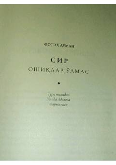

SInson qalbi, ishq va hayot sirlari haqida ta'sirli falsafiy asar.
Ushbu kitob inson qalbi, ishq sirlari va hayotning mazmuni haqida mulohaza yurituvchi ta'sirli asardir. Muallif o'quvchi bilan dildan suhbatlashib, hayot, o'lim va muhabbat tushunchalarini o'zgacha falsafiy yondashuvda ochib beradi. Asar insonni o'z ichki olamiga nazar tashlashga va hayot sinovlariga boshqacha ko'z bilan qarashga undaydi.